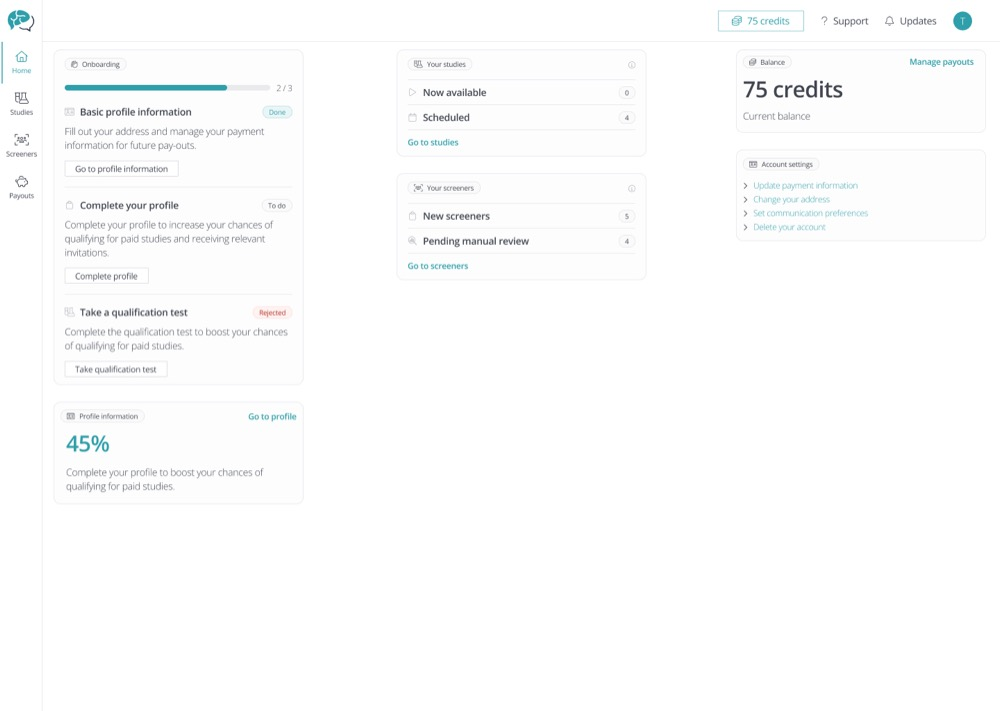
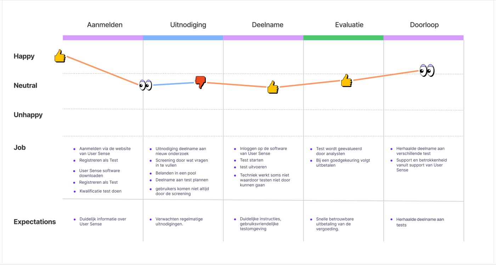
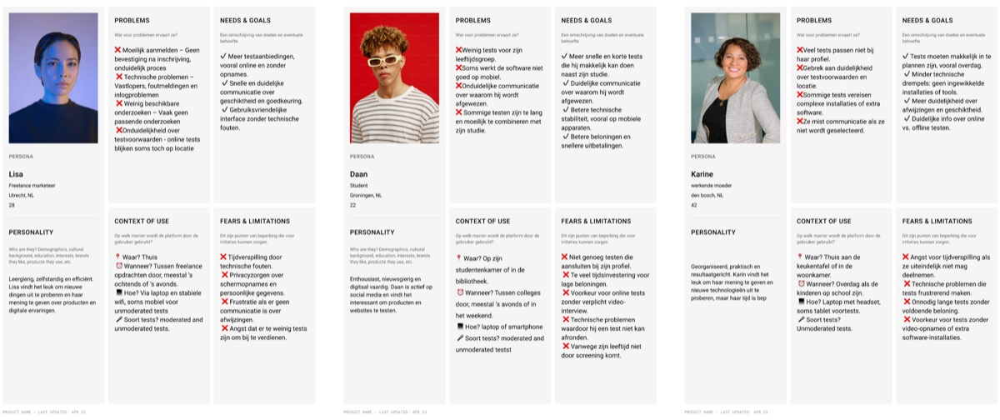
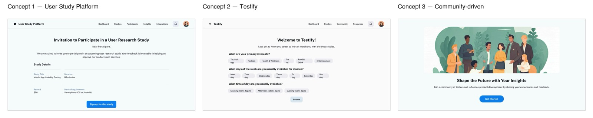
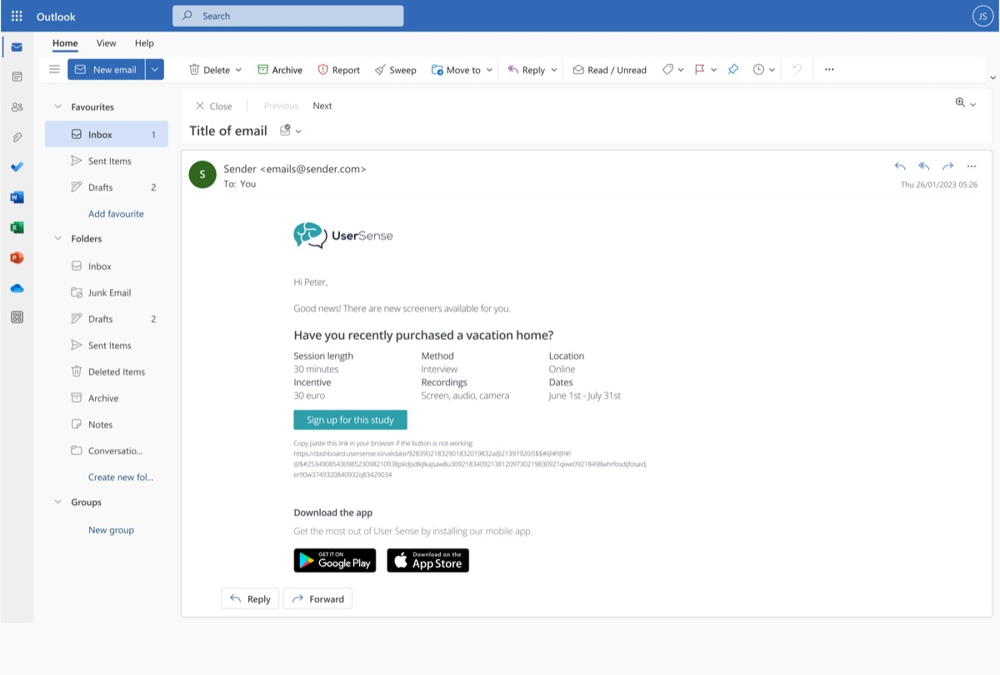
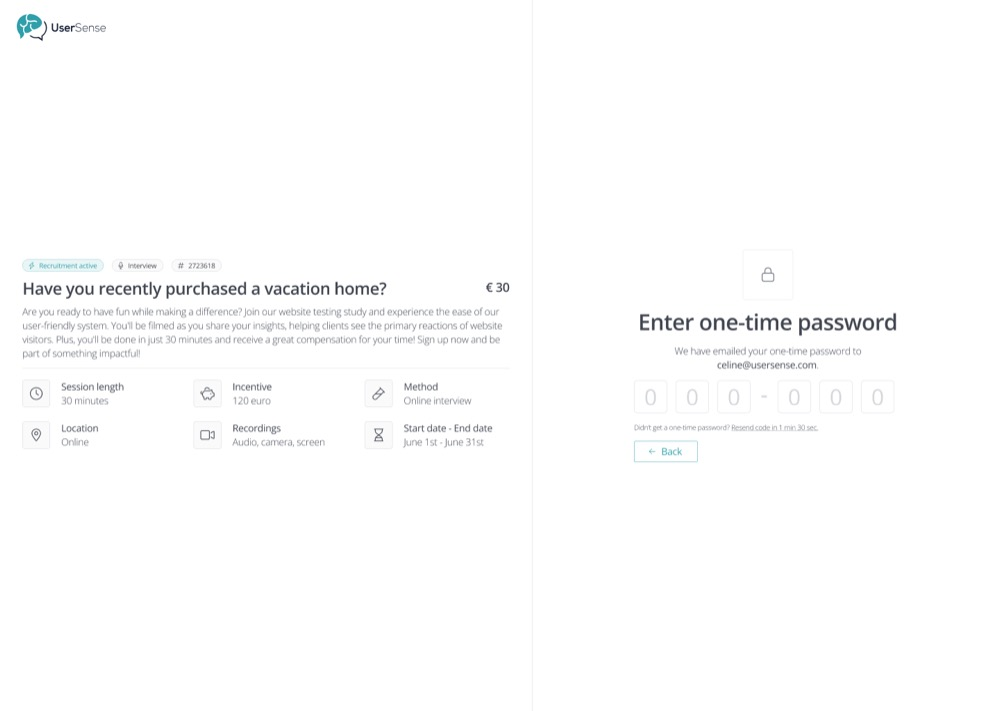
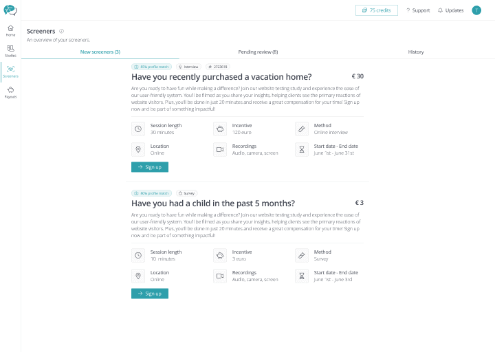

UX Design — 01 Overview
User Sense
Redesigning the sign-up and testing experience for a UX research platform's tester community.
My contribution — solo graduation project
- Did
- Ran the full process solo: survey design and analysis, support-ticket research, stakeholder mapping, personas, concept design, prototyping, and usability testing.
- Already decided
- The company and the challenge area — friction in the tester sign-up and testing flow — were set by the internship brief, with regular feedback from my company mentor.

Design challenge
How might we design the sign-up and testing process for testers so it's efficient and easy to use, while giving them fast access to relevant tests and the information they need?
Research
User Sense is a Dutch UX research platform, founded in 2020, that helps companies improve their digital products through user testing. Its research runs on a self-built panel of more than 75,000 participants — people who sign up as "testers" to take part in studies.
My assignment, set as my graduation project, was to fix friction on the tester-facing side of that platform: signing up, finding and joining studies, and using the testing environment itself. I surveyed User Sense's own tester pool and reviewed support tickets to find out where the friction was actually concentrated, rather than guessing.
To see exactly where the experience dipped, I mapped it as a journey across five stages — sign-up, invitation, participation, evaluation, and repeat participation — scored on emotion at each step. The dip landed squarely on the invitation stage: unclear screener questions and testers not always making it through screening.

Insights
- 46% of testers had hit a technical problem on the platform, most often around logging in.
- Signing up for a specific test was the single most common complaint — ahead of participating in the test itself.
- Baseline satisfaction was still a respectable 7.2/10, and most testers said they'd recommend User Sense to others. The platform wasn't broken — but the rough edges were costing it.
The survey finding and the journey map agreed: the invitation and sign-up stage was where trust leaked out, echoed by the platform's own biggest complaint.
Ideation
I turned the research into three personas, each representing a different way people use the platform: a freelance marketer who gets stuck on unclear sign-up steps, a student who rarely sees tests that fit his profile, and a working parent who avoids tests requiring extra software. Different life stages, same underlying problem: the platform wasn't telling people enough, early enough.

From that, five design principles: clearer in-test navigation, visual step-by-step instructions, transparency around participation odds instead of silence, a stronger dashboard hierarchy, and onboarding that explains the process up front.
Before committing to a direction, I designed and pitched three concepts to stakeholders: a redesigned study platform fixing the existing sign-up flow, "Testify" — an onboarding flow matching testers to studies through stated preferences, and a community-style app built around sharing insights.

The other two concepts had real strategic upside — deeper personalization, a fully integrated app experience — but both added technical complexity the team's capacity and User Sense's existing infrastructure couldn't realistically absorb yet. I recommended the first concept: it solved the two problems the research kept surfacing, transparency and ease of use, without requiring a technical rebuild.
Final design
The flow starts before testers even open the app: an email notifies them the moment a matching study becomes available, with the key details — length, incentive, method — visible at a glance.

Passwordless sign-in replaced the password-based login entirely — testers get a one-time code by email instead, removing the single most common technical complaint.

The screener overview shows a profile-match percentage on every study, with clear "New," "Pending review," and "History" tabs — so testers always know where they stand.
The redesigned dashboard, shown at the top of this page, brings onboarding progress, available studies, and account balance together on one screen. From there, testers can jump into a full studies overview and start or cancel a session in one click.

Testing
I validated the redesigned sign-up, dashboard, and screener flow through usability testing with real testers before handover to User Sense. Feedback on the new dashboard was clear: as one participant put it during testing, "Finally I have everything in one place — it makes the whole thing feel a lot calmer."
Testing also surfaced honest limitations — some labels weren't fully self-explanatory, and a few actions needed clearer confirmation feedback — the kind of refinement a next iteration would take on.
Outcome
The result was a redesigned tester environment — covering sign-up, the study dashboard, and the screener flow — validated through usability testing and handed over to User Sense as the final graduation deliverable.
Reflection
Going in, I assumed the biggest fix would be visual — a cleaner dashboard. The research said otherwise: testers were frustrated by silence and uncertainty, not clutter. That reframing is what shaped passwordless sign-in and the profile-match percentage as the real priorities, not just a fresh coat of paint.
This case study reflects the design work from my graduation project; I don't have post-launch platform metrics to report here.